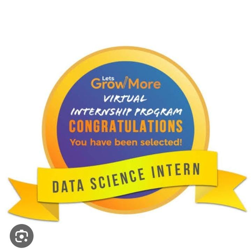
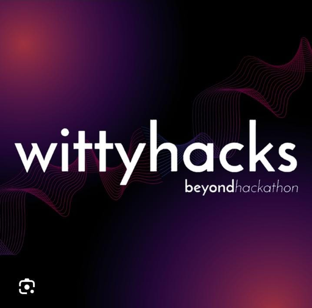

Work Experience
Intern At IIT Mandi,H.P
Python development in ML & AI . This internship with help me to get deep knowledge on the "Python Programming" subject. It’s designed to be used in a range of applications, including data science, software and web development, automation, and generally getting stuff done.
Google Developer Student Club
Fundamental knowledge of software development concepts . Together, we learn the latest in Machine Learning, Android App Development, Google Cloud Platform, Flutter, and so much more. We grow our knowledge in a peer-to-peer learning environment and put theory to practice by building solutions for local businesses and their community.
Intern At Coding Ninja
We oversee and manage the execution of different marketing strategies for a company. I use my skill set to promote products and services by implementing product-specific marketing campaigns.
Social summer of code
I contribute with my skills and expertise to different projects and learn from the diverse perspectives of my fellow contributors. This experience will not only help me grow as a professional but also enable me to make a positive impact in the community.

Intern at lets grow more
I had the opportunity to work on three exciting projects and expand my knowledge in the field of web development .

Volunteer in Wittyhacks 3.0
It's been an incredible experience to manage or promoting the event of the biggest community hackathons under entire datacode team.